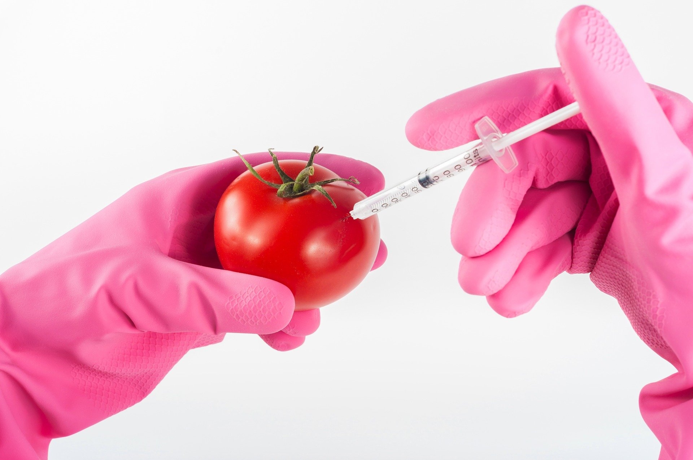

GMOs Around the World

- As of 2020, 22 different GM crops are grown in 41 countries around the world, and many countries import GMO products.
- This is an informative and interactive map about GM crops in different countries.
- Yellow countries grow GM crops commerically, orange countries used to grow them commercially, and white countries currently have no commerical GM crop cultivation.
- Hover over the lightbulb to see which countries have information to learn about.
- Click on a country to begin!
Sources
- GM crop grower
- Former GM crop grower
- No GM crops